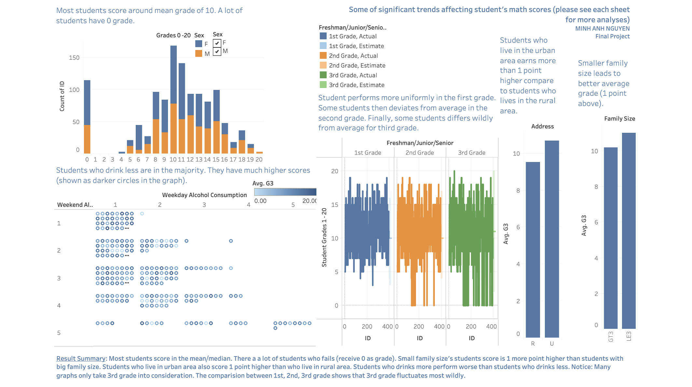
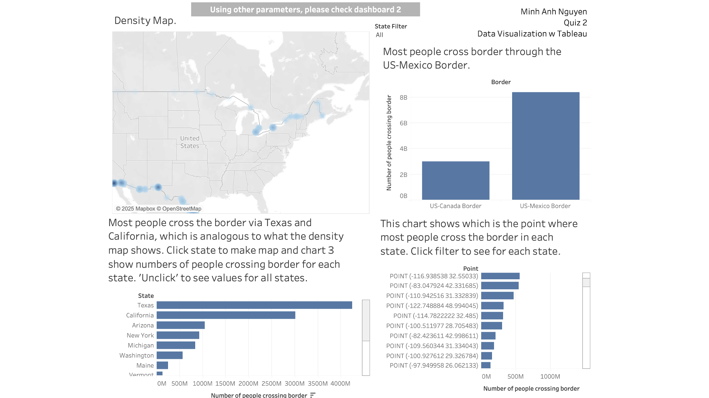
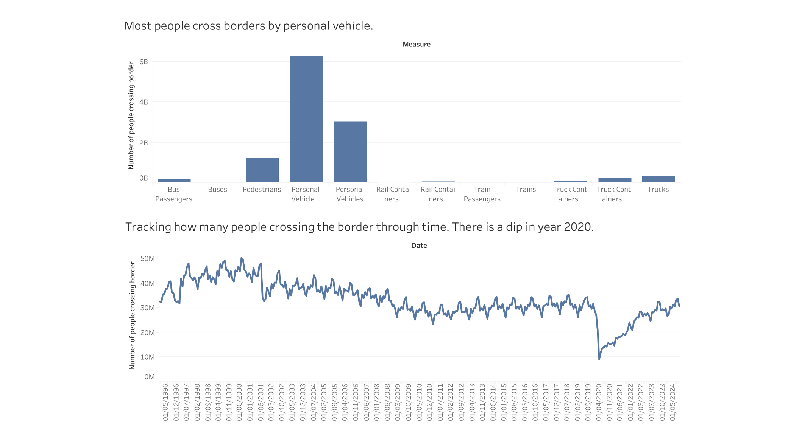
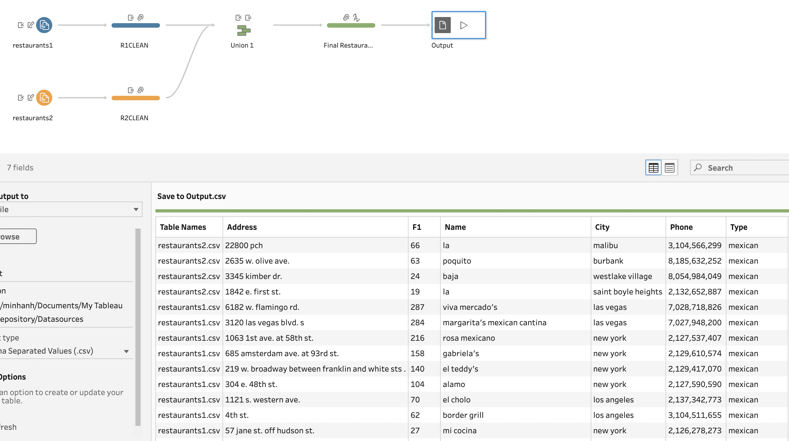

Tableau Projects
1. Finding correlations between student's math scores and personal/social characteristics from data on secondary Portuguese students.
Dataset taken from UC Irvine Machine Learning Repository. The data have information on students' demographics and routines that could possibly related to the students' mathematic grades. The data contains 395 samples spanning 33 attributes.
Results: Students gradually get worse grades from freshman to senior. Students who have small family size and living in urban area score on average 1 score more.
2. Exploring demographics of attempts to cross into the United States.
The data contains information from border crossing entries across various ports on the border of the United States. The data is 395,638 samples long and contains 10 attributes. Dataset was given by instructor.
 Results: Most people cross border via US-Mexico Border, specifically via Texas Border. Most people cross border by personal vehicles as passengers. In 2020, there is a dip in numbers of people crossing borders.
3. Cleaning and joining datasets.
The dataset are restaurants' addresses and contact information. Data was given by instructor. The original data were two separate CSV files, contains duplicates, had the same attributes with different names. The final dataset fixed and combined all samples into one big dataset with no overlaps or spelling mistakes.
Results: The data is ready to be used for analysis.